UX & Game Designer with a B.S. in Human-Computer Interaction from NJIT. I design things that feel good to use — from 90-screen health apps to card games with hidden identities.
I just graduated from NJIT with a degree in Human-Computer Interaction and a specialization in Game Design. Most of my work bounces between two things — designing interfaces that need to actually work for real people, and building game systems where the rules and the story tie together.
I'm open to different kinds of work — UX, game design, whatever lets me build things people actually interact with. I just like making stuff that works and feels intentional.
New Jersey Institute of Technology
B.S. Human-Computer Interaction
Game Design & Production Specialization · May 2026
🏆 3rd Place — Capstone Showcase📋 Dean's List ×2
Selected projects
Things I've made
From tele-rehabilitation platforms to psychological horror games — here's a look at what I've been working on.
UX DesignerSpring 2026
TeleRehab
Senior Capstone · NJIT · Sponsored by Dr. Roni Barak Ventura, PID Lab
A tele-rehabilitation tablet app designed for construction workers managing plantar fasciitis. Workers stand on concrete 8+ hours a day — TeleRehab brings guided exercises, pain tracking, and wearable sensor support directly to the job site.
Designed 90+ interactive screens in Figma for iPad Pro (11″) across the entire application
Owned the Onboarding, Arduino Sensor Connection, and Gamification/Progress flows
Created interactive pain foot maps, sensor pairing sequences, and recovery-focused rewards with 48px touch targets for glove-friendly use
Built a full design system: color palette, typography, component standards, spacing, and accessibility guidelines
Developed user flows, low-fi wireframes, high-fi prototypes, and a 20+ page design documentation manual
Collaborated in a 3-person Scrum team using GitHub Projects with iterative sponsor feedback
Game Designer & DeveloperSpring 2026
Fractured Wonderland
IT 265: Game Architecture & Design · NJIT
UnityC#Game DesignGDDPlaytestingAccessibility
A card-based social deduction game set in a dying dream realm inspired by Vocaloid's "Alice of Human Sacrifice." Players are masked dreamers trying to escape — but some are secretly Nightmares keeping everyone trapped. The world constantly shifts between Dream and Nightmare states, flipping how every card works.
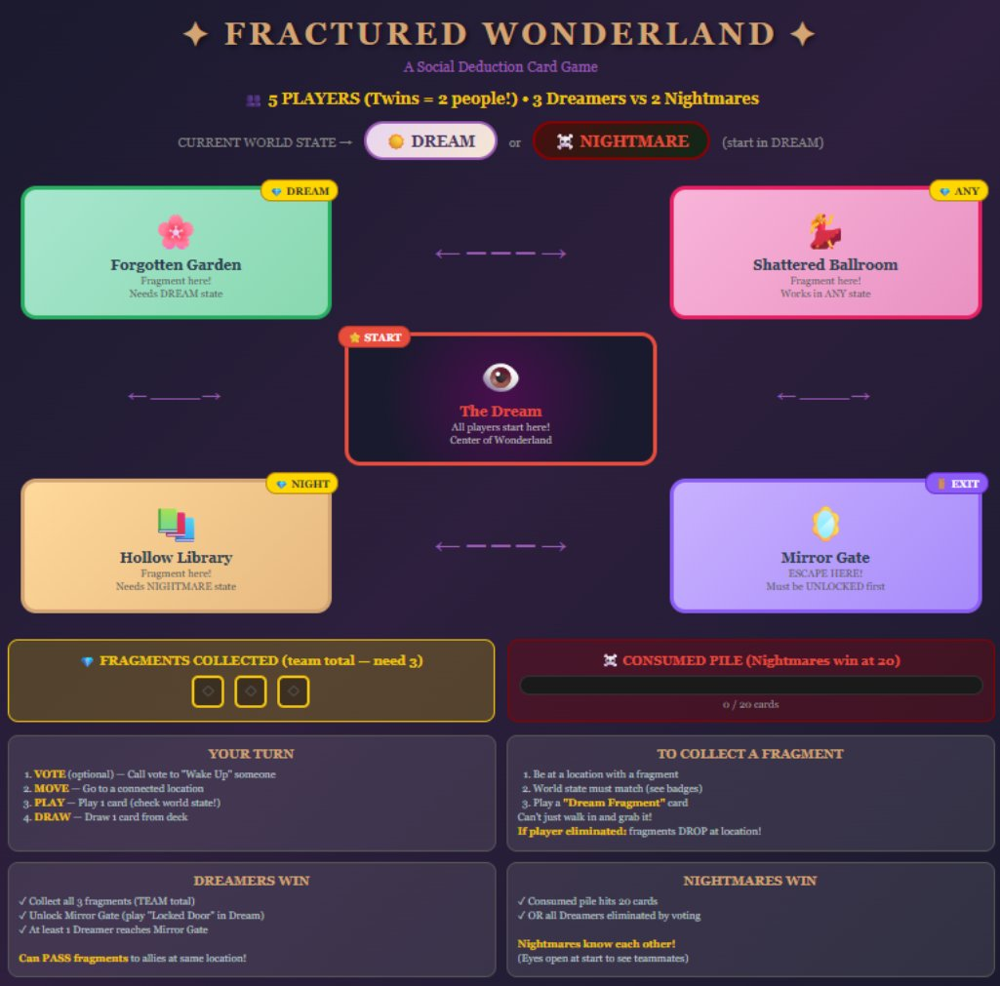
Game Board — Locations, Fragments, Win Conditions
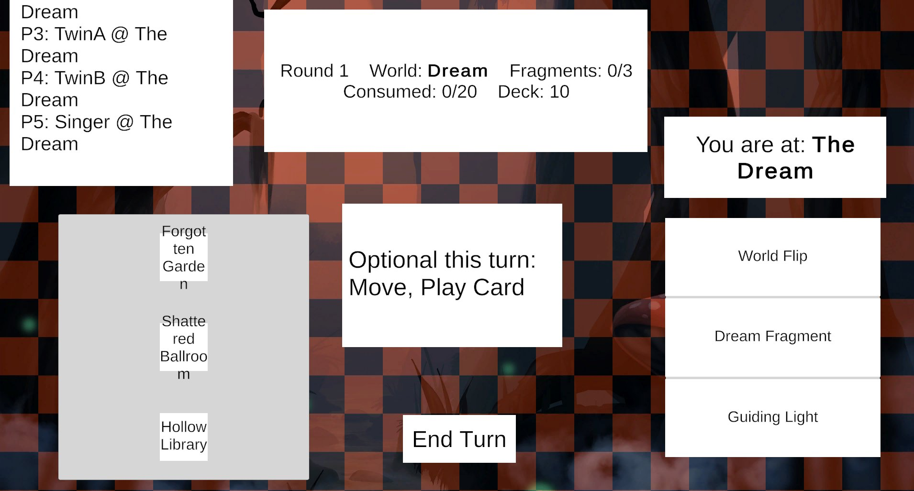
Unity Build — In-Game Turn Flow
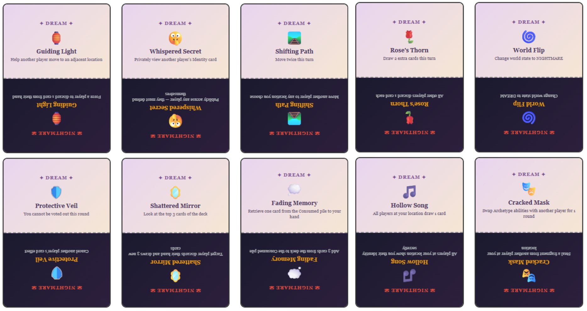
Dual-State Playing Cards — Dream effects (top) flip to Nightmare effects (bottom)
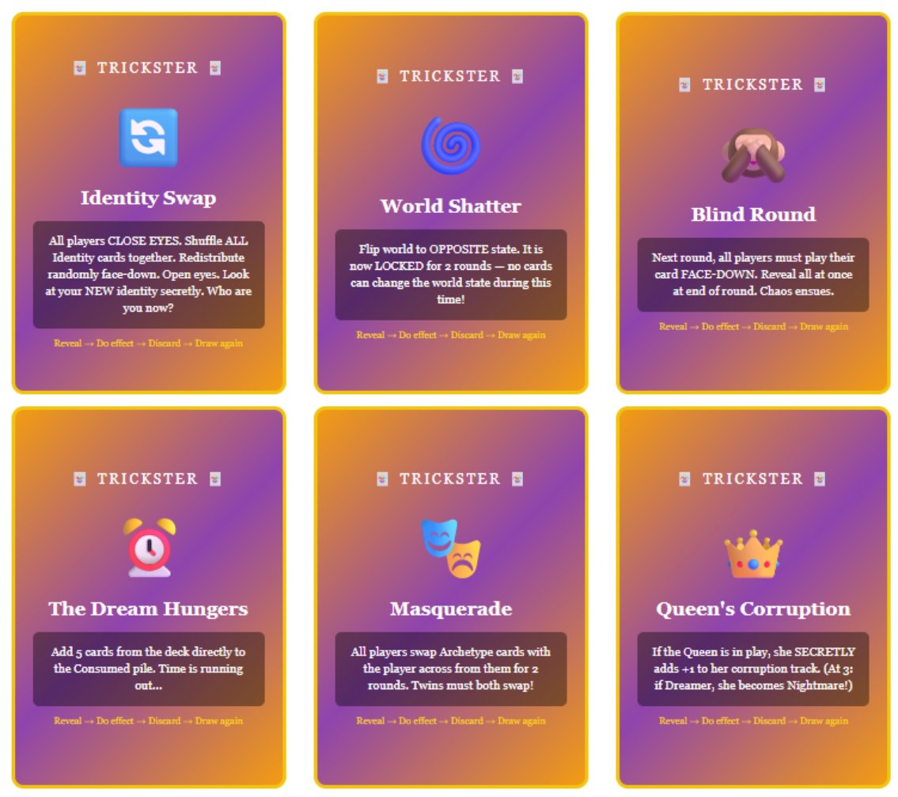
Trickster Wild Cards — Identity Swap, World Shatter, Blind Round & more
What I Did
Designed original game concept with dual-state world (Dream/Nightmare) that dynamically changes all card effects and board rules
Created 4 unique Alice archetypes (Warrior, Singer, Queen, Twins) with distinct abilities and risk/reward mechanics
Developed mechanics including secret identities, world state flips, dual-effect cards, and a corruption system with multiple win conditions
Designed card layouts with visual hierarchy for both states, plus 6 Trickster wild cards for high-stakes disruption
Authored a complete Game Design Document with mockups, target audience analysis, and accessibility strategies
Built a playable prototype in Unity with turn flow, location movement, and card mechanics
Conducted external playtesting and iterated on mechanics clarity and card readability
A 2D psychological horror exploration game set in a decayed school. The player, Ray, wakes up without memories and explores classrooms, the library, cafeteria, and gym to uncover fragments of the past. Each memory shifts the protagonist's mental state — and the more disturbing ones you find, the faster Ray's mind decays.
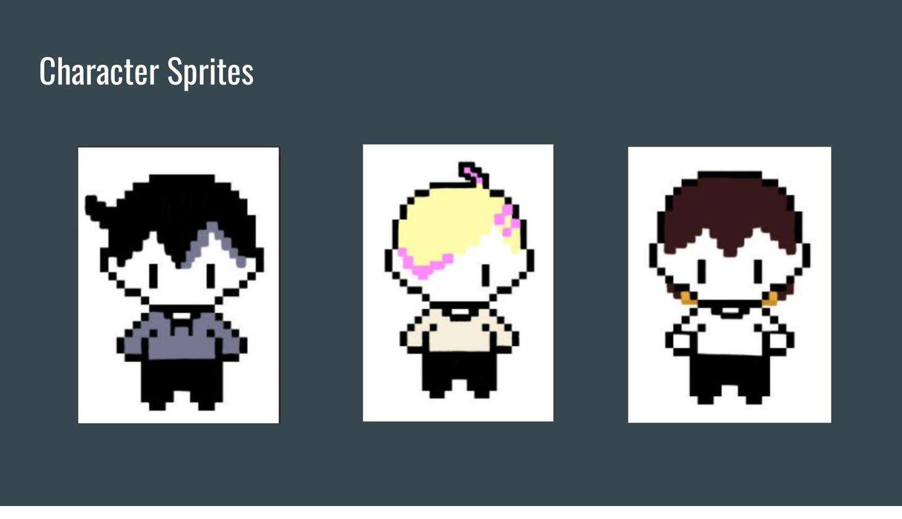
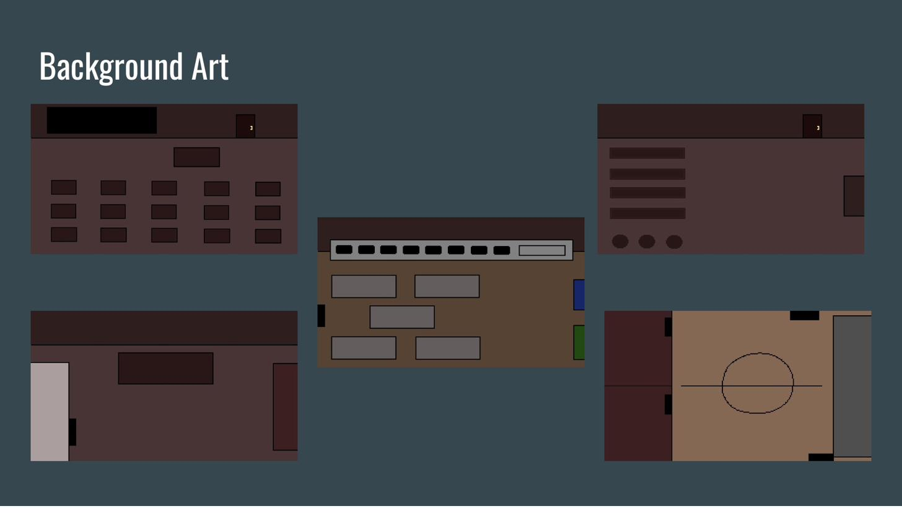
Character Sprites & Background Art — Classroom, Library, Cafeteria, Gym, Principal's Office
Memory Tracking & Decay System
I designed a dynamic system where collectible memory fragments shift the protagonist's mental state. Good memories decrease decay (–5), bad memories increase it (+5). The cumulative total determines which of three endings the player experiences.
3
Endings
5
Rooms
6
NPCs
10
Memories
NPC Dialogue & Narrative Branching
I wrote the full dialogue script for 6 characters — Mrs. Nick (Gym Teacher), Ms. Vale (Librarian), Mr. Gray (Principal), Lunch Lady Marnie, The Whispering Student, and The Janitor's Shadow. Each NPC delivers cryptic hints guiding players to good and bad memory fragment locations. The MC's tone, internal monologue, and environmental audio all shift dynamically with the Decay Meter.
Three Endings
≤ 20
Good — Acceptance
21–40
Neutral — Reflection
≥ 41
Decay — Trapped
What I Did
Built the dialogue system, UI (menus, decay meter, ending screens), memory tracking system, and a dodging minigame in Unity/C#
Wrote the complete game script and NPC dialogue for 6 characters, each with personality-driven hint systems
Designed the Decay Meter mechanic (good = –5, bad = +5) with three ending thresholds
Created dialogue branching logic where accumulated decay shifts the MC's tone from hopeful to paranoid
Authored the Layout Document detailing memory logic, decay tables, branching variables, and visual flowcharts
Conducted playtesting with 7 external testers; iterated on UI prompts, movement speed, and interaction clarity
Managed version control via GitHub with feature branching; used Trello across a 4-sprint cycle
A portfolio of 3D work covering the full modeling-to-animation pipeline — props, environments, character rigs, walk cycles, and scene recreation from anime reference material.
Portfolio Reel — Full Semester Overview
Reference → Model
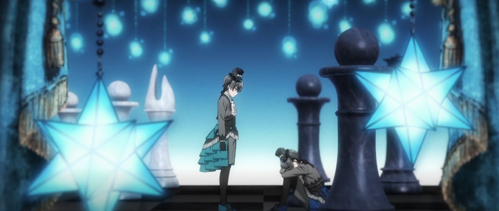
Reference
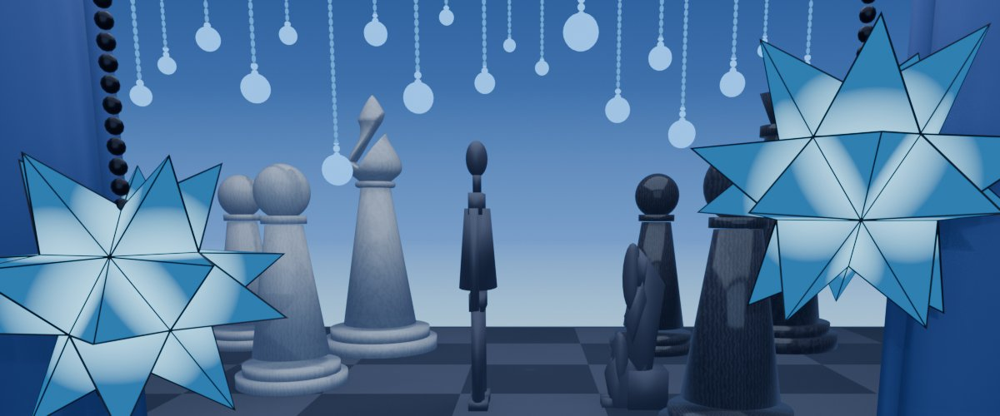
My Model
Midterm — Black Butler scene recreation with chess pieces, lighting & star geometry
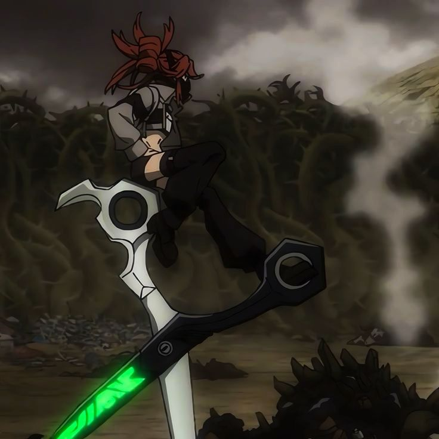
Reference
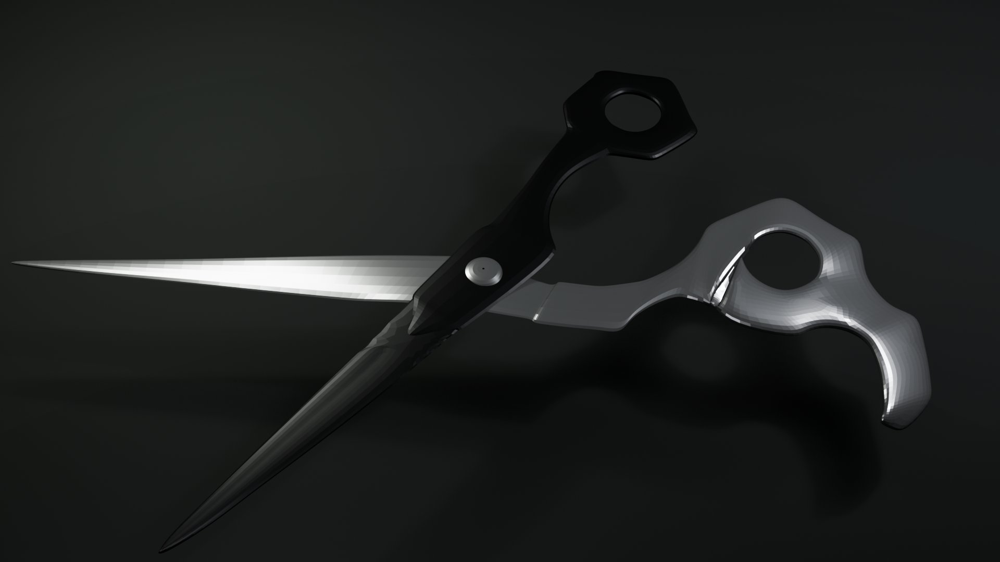
My Model
Weapon Prop — Modeled & textured from anime reference
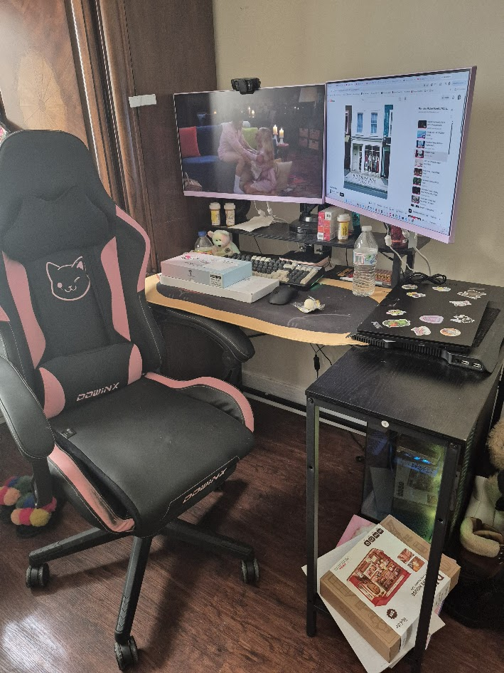
Reference
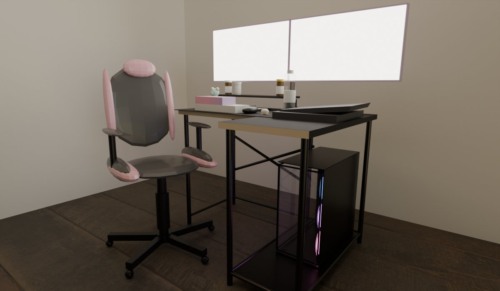
My Model
Relaxing Space — Recreated my actual desk setup in 3D, down to the PC and chair
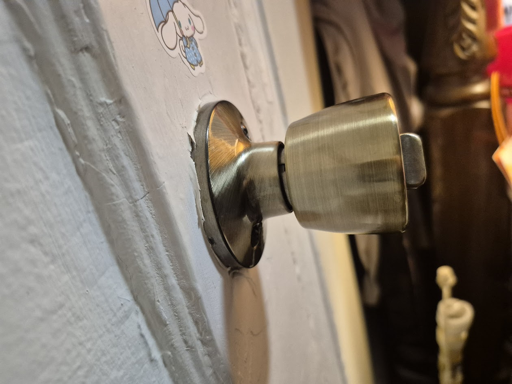
Reference
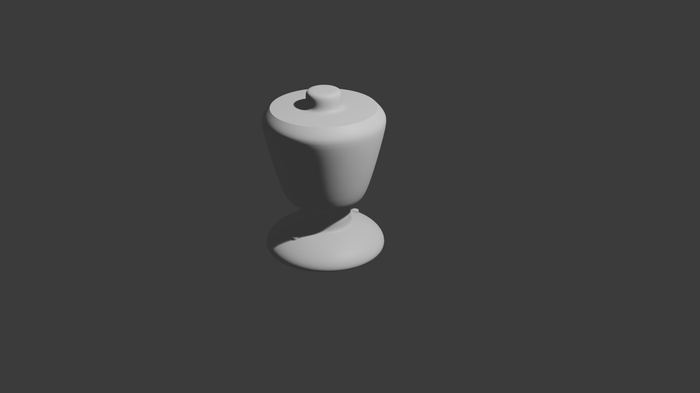
My Model
Prop Modeling — Doorknob from reference photo
Animations
Final — Lucky Star Cheerleading (50s)
Rube Goldberg Device
Animated Desktop Object
Walk Cycle
Highlights
Created props, lighting compositions, walk cycles, a Rube Goldberg device, environment scenes, and animated desktop objects
Recreated anime scenes (Black Butler, Lucky Star) with full character modeling, rigging, skinning, and animation
Midterm: recreated a scene from Black Butler; Final: 50 seconds of Lucky Star cheerleading animation
Completed timed challenges — model, skin, rig, and animate a video game character from scratch under time pressure
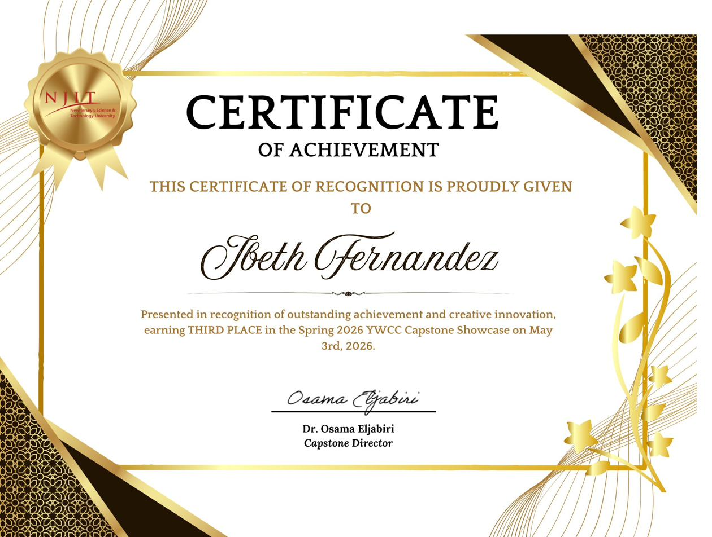
3rd Place, YWCC Capstone Showcase
Awarded for outstanding achievement and creative innovation at the Spring 2026 Capstone Showcase at New Jersey Institute of Technology. Presented TeleRehab — a tele-rehabilitation platform for construction workers — signed by Dr. Osama Eljabiri, Capstone Director.
Toolkit
What I work with
A mix of design, development, and creative tools — built up across UX, game, and 3D projects.
🎨
Design & Prototyping
Figma · FigJam · Wireframing · High-Fidelity Prototyping · User Flows · Design Systems · UI Design
🔍
UX Research
User Research · Usability Testing · Playtesting · Competitor Analysis · User Acceptance Testing
💻
Development
HTML · CSS · JavaScript · SQL · C# (Unity)
🎮
Game Design & 3D
Unity · Blender · Game Design Documentation · Narrative Design · Dialogue Systems · Character Rigging
⚙️
Tools & Process
GitHub · Scrum/Agile · Trello · GitHub Projects · Microsoft Office · Google Workspace · Technical Writing
Let's connect
Say hello
I'm looking for opportunities in UX design, game design, and creative technology. Whether it's a role, a collaboration, or just a conversation — I'd love to hear from you.